Actual SendRack screens with isolated, clearly labelled sample accounts and sample money. Previous recorded stages are green; the current stage is orange; upcoming stages are muted. Acceptance and physical collection remain separate. No route, rider movement or ETA is invented. The tracking-map screenshot shows the real unavailable-tile state in this restricted environment. Controlled tile tests passed; live provider responses and physical Android were not verified.
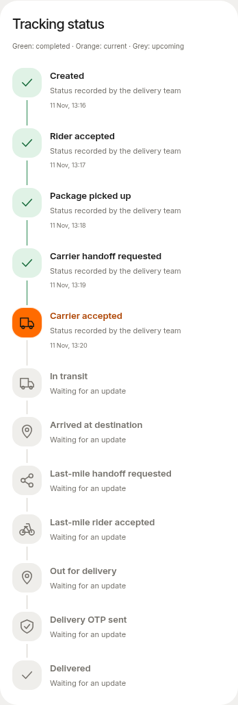
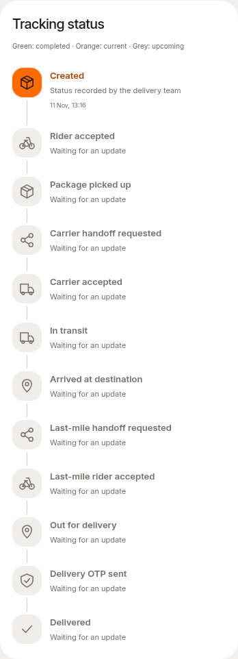
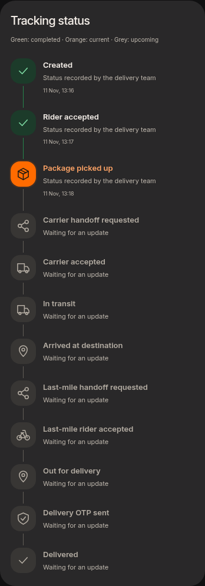
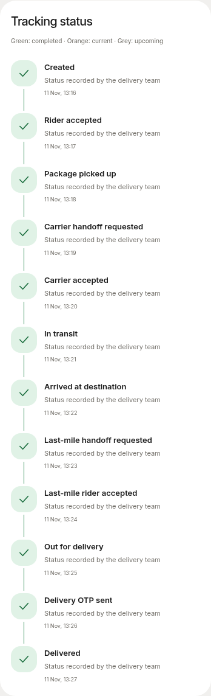
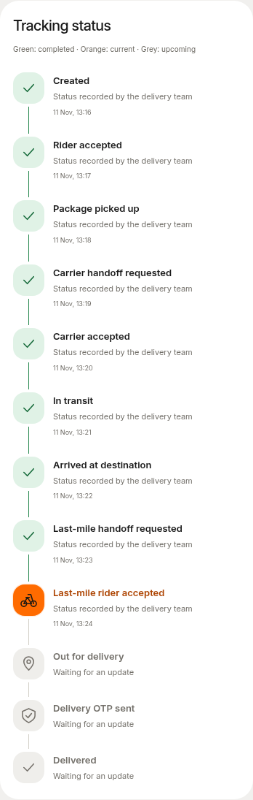
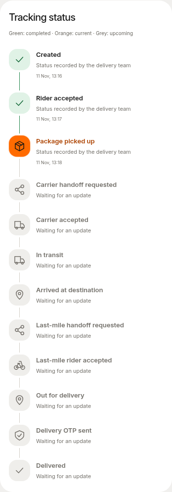
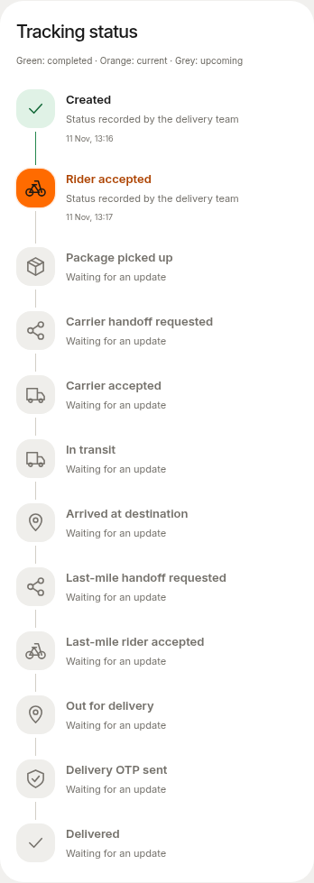
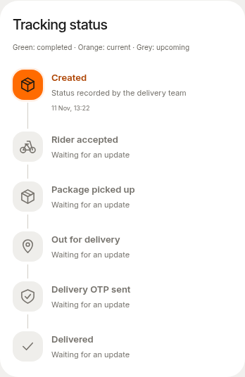
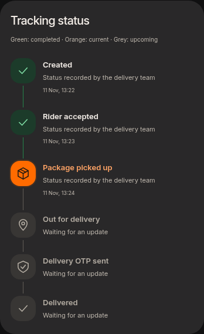
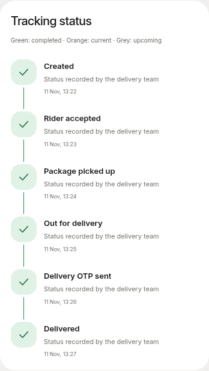
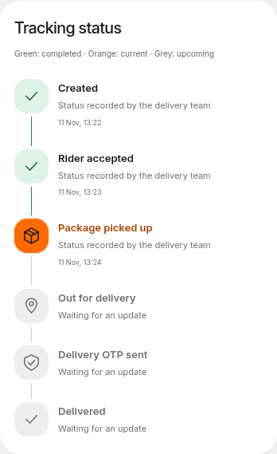
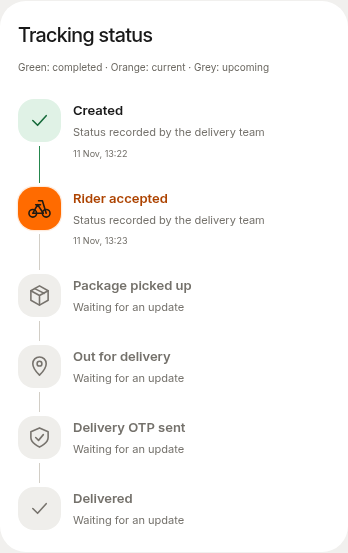
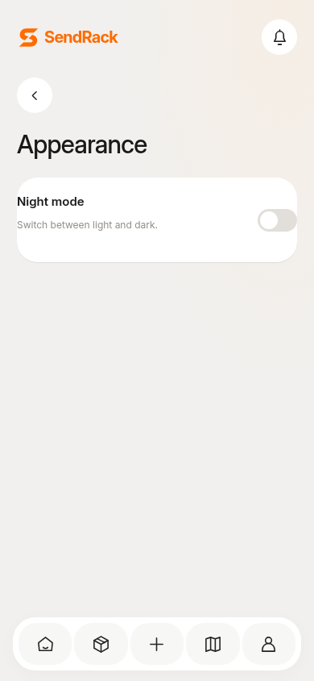
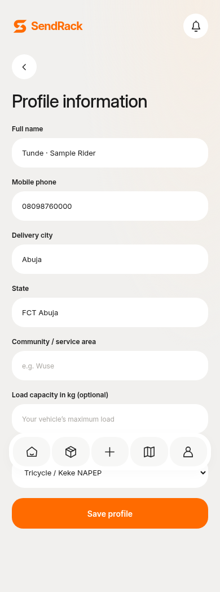
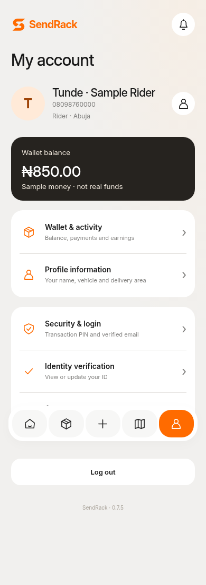
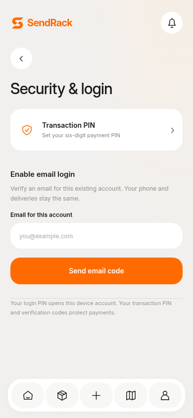
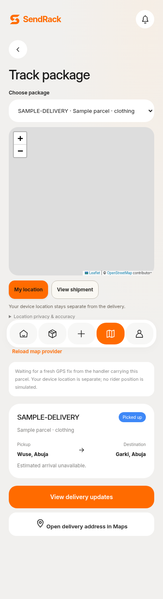
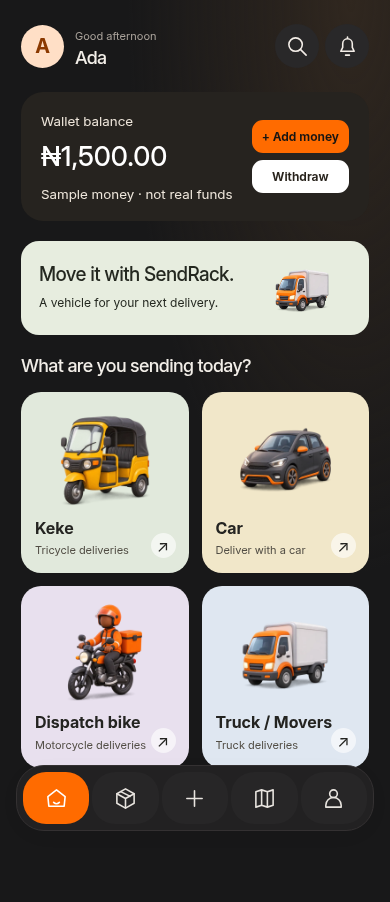
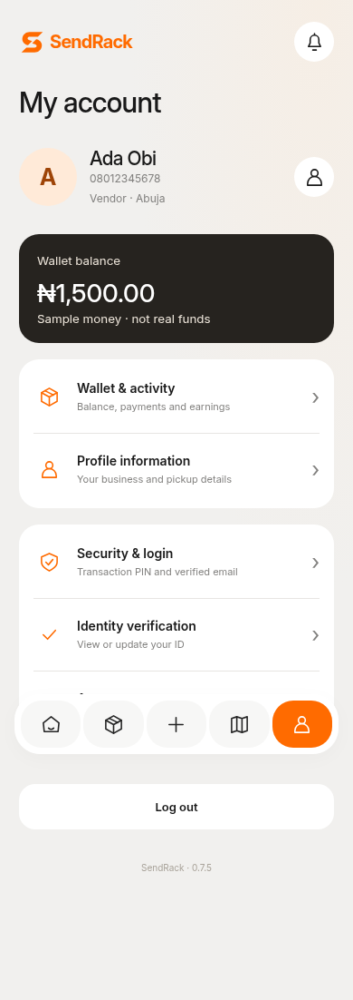